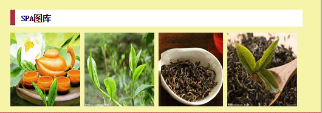

| 茶叶新闻 | 茶道企业 | 茶道文化 | 茶艺培训 | 茶叶产品 | 茶道论谈 |
|---|
| 红茶 |
| 全发酵的茶（发酵度为80~90m）祁门红茶、荔枝红茶、红茶主要有 小种红茶、荔枝红茶、红茶主要有小种红茶、功夫红茶、红碎茶三大类。 功夫红茶主要分布在广东、福建、江西一带、以潮汕的功夫茶为主。 |
| 乌龙茶 |
| 又称青茶，属半发酵茶，既制作时适当发酵，使叶片稍有红变，是介于 红茶和绿茶之间的一种茶叶。它既有绿茶的鲜浓，又有红茶的甜醇。因其 叶片中间为绿色，叶缘呈红色，故有“绿叶镶红边”之称。 |

| 夏秋雨多雾大（云南茶区），日照较少利于茶树越冬和养分积累， 利于夏秋茶的品质。砖红壤、砖红壤性红壤、山地红壤货山地黄壤、棕色森林土，这些土壤发育程度较深，不发酵的茶（发酵度为零）。代表茶有 普龙茶、蒙顶甘露、日照绿茶、蒙洱茶、信阳毛尖、都匀毛尖、黎平 雀舌、官庄干发茶叶[11]、紫阳毛尖茶。 | 茶叶源于中国，发现最早人工种植茶叶的遗迹在浙江余姚的田螺山遗址，已有6000多年的历史。饮茶始于中国。叶革质，长圆形或椭圆形，可以用开水直接泡饮。 茶树种植的自然条件包括地貌、气候、土壤类型等。地形以丘陵为主，排水条件要好，降水充沛，年温差小，光照条件好，这样的气候条件适宜各种类型的茶树生长。 |
